AutoFirma es una herramienta de escritorio con interfaz gráfica que permite la ejecución de operaciones de firma de ficheros locales en entornos de escritorio (Windows, Linux y macOS). También puede utilizarse a través de consola o ser invocada por otras aplicaciones mediante protocolo para la ejecución de operaciones de firma.
El presente documento guía al usuario final de AutoFirma a través del proceso de instalación, presenta las posibilidades de uso de AutoFirma a través de consola, el uso de tarjetas inteligentes y lista diversos problemas que pueden surgir en la instalación y ejecución de la aplicación.
AutoFirma hace uso de los certificados digitales X.509v3 y de las claves privadas asociadas a estos que estén instalados en el almacén de claves (KeyStore) del sistema operativo o del navegador Web (Internet Explorer, Mozilla Firefox, etc.) en caso de realizarse la operación desde un trámite web. También permite el uso de dispositivos externos (tarjetas inteligentes, dispositivos USB) configurados en estos almacenes de claves (como, por ejemplo, el DNI Electrónico o DNIe).
AutoFirma hace uso de las claves privadas asociadas a los certificados del usuario y no permite que estos salgan en ningún momento del almacén (tarjeta, dispositivo USB o repositorio local) ubicado en su PC.
AutoFirma no almacena ningún tipo de información personal del usuario, ni hace uso de cookies ni ningún otro mecanismo para la gestión de datos de sesión. AutoFirma sí almacena trazas de su última ejecución a efectos de ofrecer soporte al usuario si se encontrase algún error. Estas trazas de ejecución no contienen ningún tipo de información personal y la aplicación no facilita de ninguna forma el acceso a estos datos almacenados.
AutoFirma es una aplicación de Software Libre publicado que se puede usar, a su elección, bajo licencia GNU General Public License versión 2 (GPLv2) o superior o bajo licencia European Software License 1.1 (EUPL 1.1) o superior.
Puede consultar la información relativa al proyecto Cliente @firma, dentro del cual se encuentra AutoFirma, y descargar el código fuente y los binarios de la aplicación en la siguiente dirección Web:
https://administracionelectronica.gob.es/ctt/clienteafirma#.X1o8YcH7RPY
Requisitos mínimos
El uso de AutoFirma como herramienta de firma integrada dentro del proceso de firma de trámites web tiene los siguientes requerimientos en cuanto a entorno operativo:
-
Sistema Operativo
-
Microsoft Windows.
-
Soportado directamente en 7, 8, 8.1 y 10 y 11.
-
En 32 o 64 bits.
-
-
Linux
- Distribuciones probadas: Ubuntu, Fedora y OpenSuse.
-
Apple macOS.
- Soportado directamente en Sierra, High Sierra, Mojave.
-
-
Navegadores Web (para la invocación por protocolo)
-
Microsoft Windows
-
Google Chrome 46 o superior.
-
Mozilla Firefox 41.0.2 o superior.
-
Microsoft Internet Explorer 8 o superior.
-
Microsoft Edge 60 o superior.
-
-
Linux
- Mozilla Firefox 41.0.1 o superior.
-
Apple macOS
-
Apple Safari 12.0 o superior.
-
Google Chrome 46 o superior.
-
Mozilla Firefox 65 o superior.
-
-
ADVERTENCIA: El funcionamiento de AutoFirma al invocarlo desde versiones de Internet Explorer anteriores a la 11 (o Internet Explorer 11 en modo de compatibilidad con una versión anterior) está supeditado a que el administrador de la aplicación web haya cumplido ciertos requisitos durante el despliegue. Para asegurar el correcto funcionamiento de las operaciones de firma online utilice otro de los navegadores soportados.
En entornos macOS y Windows no es necesario tener instalado un entorno de ejecución de Java. En Linux se necesita un entorno de ejecución de Java 11 de Oracle u OpenJDK 11 (marcado como dependencia en el instalador integrado de AutoFirma).
Es obligatorio que AutoFirma sea instalado antes de iniciar el trámite web en el que se usará para ejecutar las operaciones de firma.
Enlaces de descarga
Puede descargar la última versión disponible de AutoFirma desde la siguiente página web:
http://firmaelectronica.gob.es/Home/Descargas.html
Instalación
La instalación de AutoFirma en el sistema del usuario se asemeja a la instalación de cualquier otra aplicación. Sin embargo, el proceso de instalación incluye un paso de vital importancia para la compatibilidad de AutoFirma con las aplicaciones web que integren procesos de firma con el Cliente @firma.
La comunicación entre una página web y AutoFirma se puede realizar de varias maneras, siendo la principal a través de WebSocket por medio de un canal cifrado mediante certificado SSL generado en la máquina local durante el proceso de instalación. Para que sea posible la comunicación entre el navegador web y AutoFirma, será necesario que durante la instalación se genere el par de claves del certificado, que este se almacene en disco y que el certificado generado sea dado de alta en los almacenes de confianza de los navegadores del sistema. Debido a las medidas de seguridad establecidas por cada navegador web, es posible que esto implique la aparición de un diálogo gráfico de seguridad en el que se debe conceder permisos para realizar esta operación o insertar la contraseña del almacén o del usuario administrador del sistema.
El proceso de instalación guarda el almacén de claves generado en el directorio “.afirma” dentro del directorio del usuario que instaló la aplicación. El nombre del fichero de trazas se almacena en ese mismo directorio con el nombre “AUTOFIRMA_CONFIGURATOR.afirma.log.xml”.
En el caso de Linux y macOS, la instalación se realiza con el usuario administrador y el log se guarda en el directorio temporal del sistema o, si no se puede ahí, en “/var/tmp” para facilitar su acceso.
Microsoft Windows
Instalador EXE
La instalación de AutoFirma sobre Microsoft Windows debe ser realizada por un usuario con permisos de administrador. Esta aplicación de instalación se distribuye con el nombre “AutoFirma_W_vX.Y.Z_installer.exe”, donde X, Y y Z son los números de versión y W, la arquitectura de sistema para la que está preparada. Por ejemplo, “AutoFirma_32_v1.8.0_installer.exe” se correspondería con el instalador de AutoFirma versión 1.8.0 para sistema de 32bits.
Al ejecutar el instalador, se mostrará una pantalla de bienvenida y se guiará al usuario a través de unos sencillos pasos:
<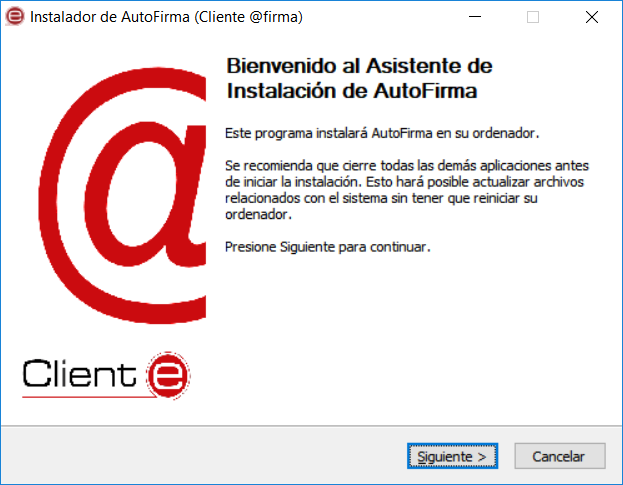
Al pulsar sobre el botón “Siguiente >” seremos redirigidos a la pantalla de licencia de la aplicación.
<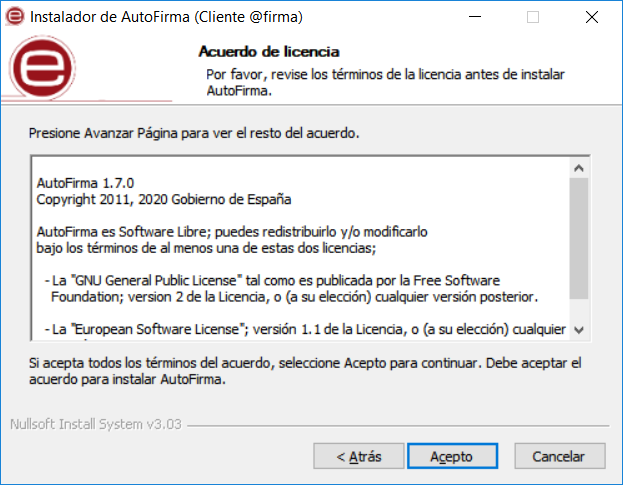
En esta pantalla, el usuario puede leer el texto de licencia de AutoFirma. Para continuar con el proceso de instalación es necesario pulsar el botón “Acepto”, tras lo cual se mostrará la pantalla de configuración de la ruta de instalación.
<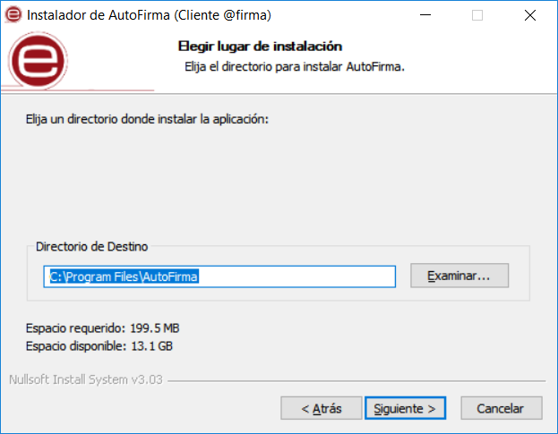
Puede dejar la ruta que se le muestra por defecto (recomendado) o seleccionar cualquier otra ubicación. En caso de modificar el directorio por defecto, asegúrese de instalar AutoFirma en un directorio propio y no en uno compartido con más aplicaciones o documentos.
Al pulsar el botón “Siguiente >” se mostrará la pantalla de configuración de las opciones avanzadas de integración.
<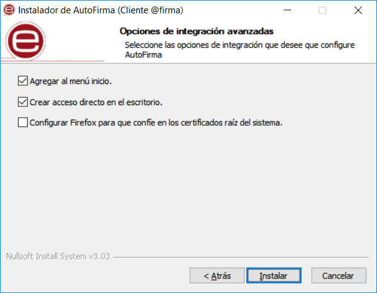
Las opciones de integración de AutoFirma que pueden configurarse son:
-
Agregar al menú inicio: Al activarlo, se creará un submenú en el menú inicio de Windows con accesos directos a AutoFirma y a su desinstalador.
-
Crear acceso directo en el escritorio: Al activarlo, se creará un acceso directo en el escritorio de Windows.
-
Configurar Firefox para que confíe en los certificados raíz del sistema: Al activarlo, se modificará la configuración de Firefox para que confíe en los certificados SSL expedidos por los prestadores de confianza del sistema, sin necesidad de que estos prestadores estén dados de alta en el almacén confianza del navegador.
La extracción y copia de ficheros al sistema se iniciará al pulsar el botón “Instalar”.
<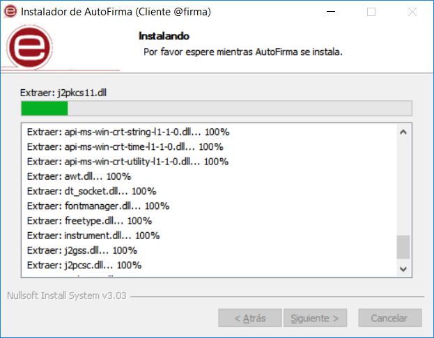
Una vez finalizada la copia de ficheros, se instalará un certificado de confianza SSL generado localmente en su almacén local de Windows.
El proceso de instalación también afecta a los perfiles de Mozilla Firefox y a la configuración de Google Chrome. En caso de encontrarse abiertos estos navegadores, se le informará al usuario mediante una ventana de advertencia y este deberá cerrarlos manualmente para poder continuar.
Los procesos de estos navegadores pueden tardar un tiempo en finalizar después de haber cerrado la ventana de la aplicación. Si vuelve a aparecer el diálogo solicitándole que cierre la aplicación, compruebe que no se encuentre abierta y espere unos segundos antes de pulsar el botón para continuar con el proceso. Téngase en cuenta que el navegador Google Chrome puede quedar abierto incluso después de cerrar su ventana. En esos casos, aparecerá un icono en el área de notificaciones del escritorio del usuario y deberá cerrarse a través de la opción proporcionada en el menú contextual de este icono.
Al completarse el instalador, se mostrará el mensaje de “Completado”.
<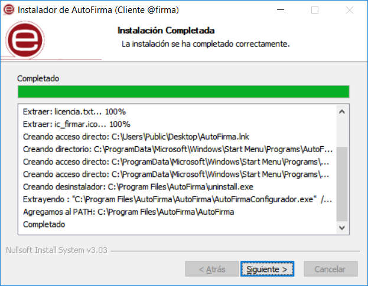
Al pulsar el botón “Siguiente”, se mostrará el resultado de la instalación.
<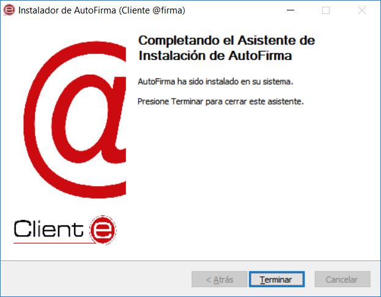
Una vez completada la instalación, las aplicaciones Web que integren el proceso de firma con el Cliente @firma podrán usar su versión instalada de AutoFirma para firmar.
Durante la ejecución de AutoFirma, es posible que este solicite permisos para acceder a la red. Consulte el apartado 4.1.3 Permisos adicionales para obtener más información.
Desinstalación
La desinstalación de Autofirma puede realizarse desde la ventana “Programas y características” del de “Panel de control” de Windows.
<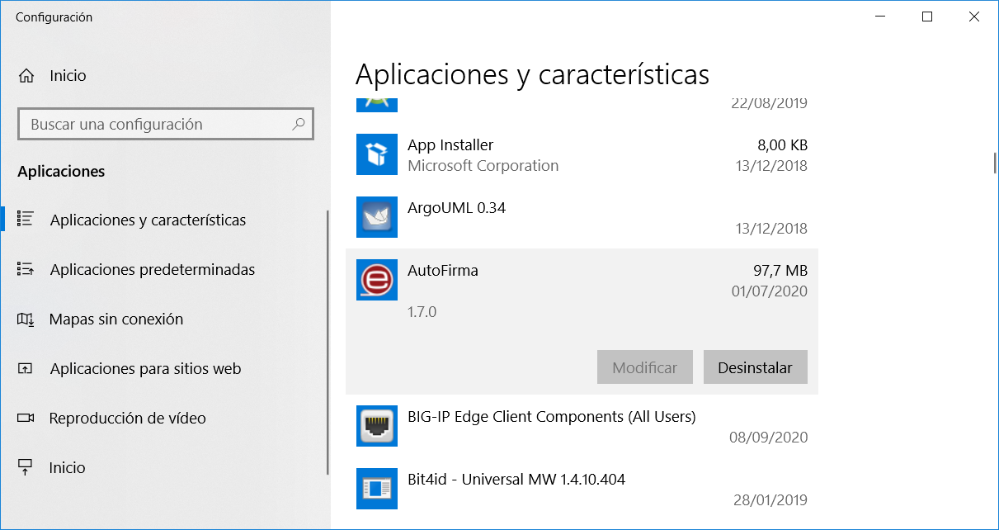
Una vez lanzado, el desinstalador presenta un sencillo asistente:
<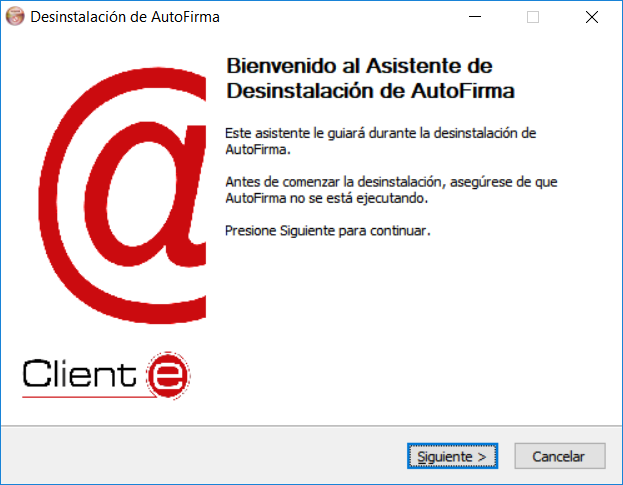
Al pulsar el botón “Siguiente >” se mostrará la opción de desinstalación.
<
Al pulsar el botón de “Desinstalar” se iniciará el proceso de desinstalación.
<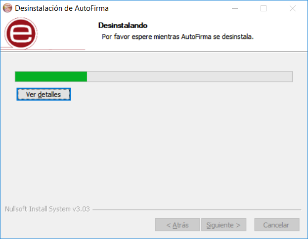
Este proceso de desinstalación también afecta a los perfiles de Mozilla Firefox y a la configuración de Google Chrome. En caso de encontrarse abiertos estos navegadores, se le informará al usuario mediante una ventana de advertencia y este deberá cerrarlos manualmente para poder continuar.
Los procesos de estos navegadores pueden tardar un tiempo en finalizar después de haber cerrado la ventana de la aplicación. Si vuelve a aparecer el diálogo solicitándole que cierre la aplicación, compruebe que no se encuentre abierta y espere unos segundos antes de pulsar el botón para continuar con el proceso. Téngase en cuenta que el navegador Google Chrome puede quedar abierto incluso después de cerrar su ventana. En esos casos, aparecerá un icono en el área de notificaciones del escritorio del usuario y deberá cerrarse a través de la opción proporcionada en el menú contextual de este icono.
Cuando el proceso termina, la aplicación ha sido correctamente desinstalada de Windows.
<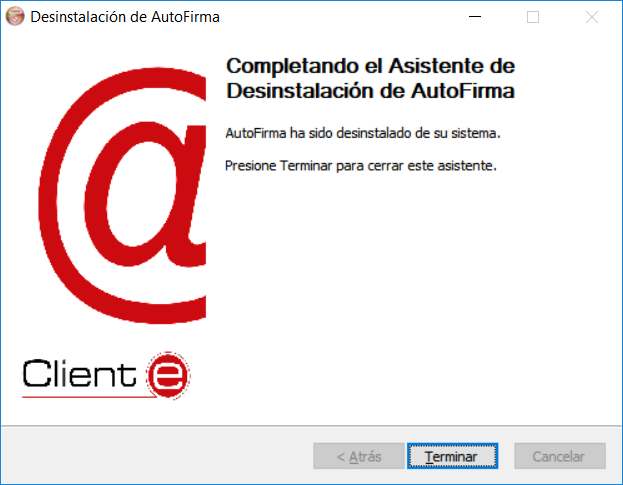
Permisos adicionales
Es probable que después de la instalación de AutoFirma, al ejecutarlo como aplicación de escritorio o como parte de un proceso de firma Web, la máquina virtual de Java instalada junto con AutoFirma solicite permisos para el acceso a Internet pasando por el Firewall de Windows. Es necesario conceder estos permisos para que AutoFirma pueda ejecutar tareas propias de su funcionamiento habitual, como son la búsqueda de actualizaciones o la comunicación con el navegador Web en los procesos de firma web.
Linux
La instalación de AutoFirma en Linux debe ser realizada por un usuario con permisos de administrador. Se distribuyen varias versiones del instalador de AutoFirma para Linux:
-
autofirma-X.Y.Z.deb: Instalador DEB para distribuciones derivadas de Debian/Ubuntu.
-
autofirma-X.Y.Z-1.noarch_FEDORA.rpm: Instalador RPM para distribuciones derivadas de RedHat/Fedora.
-
autofirma-X.Y.Z-1.noarch_SUSE.rpm: Instalador RPM para distribuciones derivadas de SUSE.
- NOTA: Se han encontrado problemas de compatibilidad con el Firefox por defecto instalado con el sistema operativo con el entorno KDE. En este caso, Firefox no atiende las llamadas realizadas por la página para que abra la aplicación. Se recomienda la instalación del Firefox oficial de la web de Mozilla.
En los nombres anteriores, las letras X, Y y Z (opcional) son los números de versión. Por ejemplo “autofirma-1.8.deb” correspondería a AutoFirma versión 1.8 para distribuciones Ubuntu/Debian.
Todos los instaladores incluyen la misma versión de AutoFirma, pero cada uno de ellos está preparado para la instalación en un conjunto distinto de distribuciones de Linux. La principal diferencia entre los dos instaladores RPM son las dependencias declaradas, dado que las NSS Tools se encuentran con distinto nombre en los repositorios por defecto de algunas distribuciones.
Para poder ejecutar AutoFirma son necesarias las siguientes dependencias, así que estas se comprueban durante el proceso de instalación:
-
JRE (Java Runtine Environment) de Oracle u OpenJDK (versión 8 o superior).
-
Biblioteca NSS Tools.
El funcionamiento de AutoFirma esta verificado en distribuciones Ubuntu, Fedora y OpenSuse. Una vez instalada, puede usarse como aplicación de escritorio e invocarse desde los navegadores web Mozilla Firefox y Google Chrome.
Hay dos opciones de instalación: por línea de comandos y desde la interfaz de escritorio.
La instalación por ambos medios dejará la aplicación instalada por defecto en el directorio:
/usr/lib/AutoFirma
Instalador DEB
Instalación
Instalación por línea de comandos del instalador DEB
Para instalación por línea de comandos, en una consola ejecutaremos:
sudo dpkg –i RUTA_INSTALABLE_AUTOFIRMA
Donde RUTA_INSTALABLE_AUTOFIRMA es la ruta al instalador en función de la distribución escogida.
Si no tenemos instaladas las dependencias anteriormente listadas, se nos mostrarán mensajes de advertencia al respecto. En caso de ser así, podremos instalar estas bibliotecas con el comando:
sudo apt-get –f install
Después de esto, se debe volver a ejecutar el comando de instalación de AutoFirma para asegurar su correcta instalación:
sudo dpkg –i RUTA_INSTALABLE_AUTOFIRMA
Instalación de Oracle Java con el fichero tar.gz de Oracle
Si se tuviese Oracle Java instalado en el sistema mediante el fichero tar.gz de la web de Oracle, la JRE no habrá quedado registrada en el gestor de paquetes. En ese caso, cuando se intente instalar AutoFirma, el gestor de paquetes considerará que no se cumplen los requisitos necesarios y se negará a instalarlo. Para forzar al uso de la JRE de Oracle se debe:
- Instalar la biblioteca “libnss3-tools”. Esta biblioteca es requisito indispensable de la aplicación:
sudo apt-get install libnss3-tools
- Configurar la variable JAVA_HOME con la JRE instalada y su directorio “bin” como parte del PATH del sistema. Esto se puede hacer, por ejemplo, editando el fichero “/etc/environment” y agregando a la variable PATH la ruta del directorio bin de Java y la nueva variable:
PATH="/usr/local/sbin:/usr/local/bin:/usr/sbin:/usr/bin:/sbin:/bin:/usr/games:/usr/local/games:/usr/java/jdk-11.0.8/bin"
JAVA_HOME="/usr/java/jdk-11.0.8"
Podemos hacer que el sistema recargue la configuración de este fichero (y así no sea necesario reiniciarlo) con el comando:
source /etc/environment
Instalación de muestra mediante el asistente de paquetes de Ubuntu
Para la instalación mediante el asistente de paquetes, se debe hacer doble clic en el fichero de la distribución (.deb). Se abrirá una ventana similar a la siguiente.
<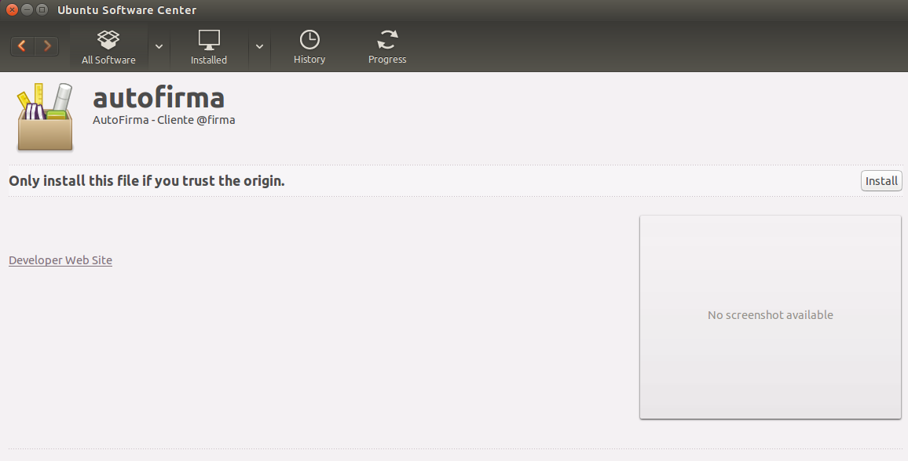
Se debe pulsar el botón instalar, que se encuentra arriba a la derecha. Si no se tienen permisos de administrador, el sistema solicitará la clave de “súper usuario” para poder realizar la instalación.
<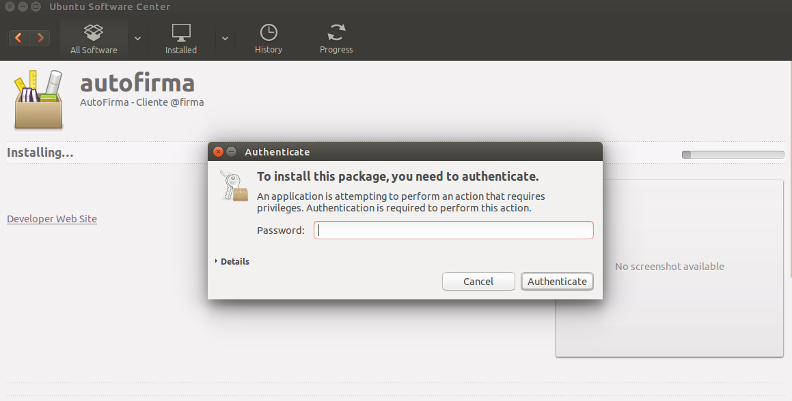
Si no ha ocurrido ningún problema, se mostrará un mensaje de confirmación.
<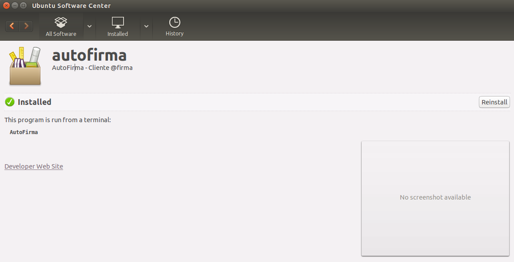
Desinstalación
Desinstalación del paquete DEB
Para realizar la desinstalación del sistema se puede utilizar el siguiente comando.
sudo dpkg -r autofirma
Cuando el proceso termina, la aplicación ha sido correctamente desinstalada del sistema.
Instalador RPM
Importación de la clave pública PGP del instalador
Antes de instalar la aplicación, se debería agregar la clave pública PGP del firmante del instalador al almacén de confianza del sistema. La clave pública PGP puede descargarse como un fichero “.asc” junto al archivo de instalación. Para importar esta clave PGP a nuestro almacén usaremos el comando:
sudo rpm --import PUBLIC_KEY.asc
En este comando, “PUBLIC_KEY.asc” será el fichero con la clave pública.
Una vez importada la clave PGP, el sistema podrá validar automáticamente la firma del instalador RPM.
Instalación
Instalación por línea de comandos con RPM
Para instalación por línea de comandos con RPM, en una consola ejecutaremos:
sudo rpm -i autofirma-X.Y.Z.noarch.rpm
En el comando anterior “autofirma-X.Y.Z.noarch.rpm” será el nombre del fichero instalador apropiado para nuestro sistema.
Si no tuviese instalados todas las dependencias del paquete, deberá instalarlas por separado
Instalación por línea de comandos con Zypper
Puede instalarse la aplicación y todas sus dependencias con el gestor de paquetes Zypper mediante el siguiente comando:
sudo zypper in autofirma-X.Y.Z.noarch.rpm
En el comando anterior “autofirma-X.Y.Z.noarch.rpm” será el nombre del fichero instalador apropiado para nuestro sistema.
El propio gestor de paquetes ya se encargará de buscar las dependencias necesarias y se ofrecerá a instalarlas.
Instalación por línea de comandos con Yum
Puede instalarse la aplicación y todas sus dependencias con el gestor de paquetes Yum mediante el siguiente comando:
sudo yum localinstall autofirma-X.Y.Z.noarch.rpm
En el comando anterior “autofirma-X.Y.Z.noarch.rpm” será el nombre del fichero instalador apropiado para nuestro sistema.
El propio gestor de paquetes ya se encargará de buscar las dependencias necesarias y se ofrecerá a instalarlas.
Instalación mediante el asistente de paquetes
Tenga en cuenta que el uso de un asistente de paquetes también puede requerir que se importe la clave PGP del firmante del instalador, para que así el sistema lo valide. Si no se importase la clave del firmante, algunos gestores de paquetes darán un error durante el proceso de instalación sin indicar el motivo del error.
Para la instalación mediante el asistente de paquetes, se debe hacer doble clic en el fichero de la distribución (.rpm), tras lo cual se pedirá la contraseña de administrador. Una vez introducida, se abrirá una ventana similar a la siguiente, según sea el gestor de paquetes del sistema. En el ejemplo mostrado, se puede ver el gestor de paquetes YaST.
<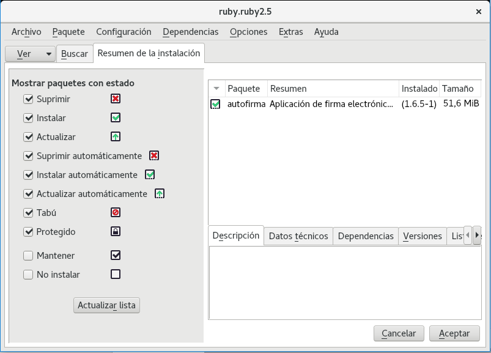
Al pulsar el botón Aceptar, se inicia el proceso de instalación:
<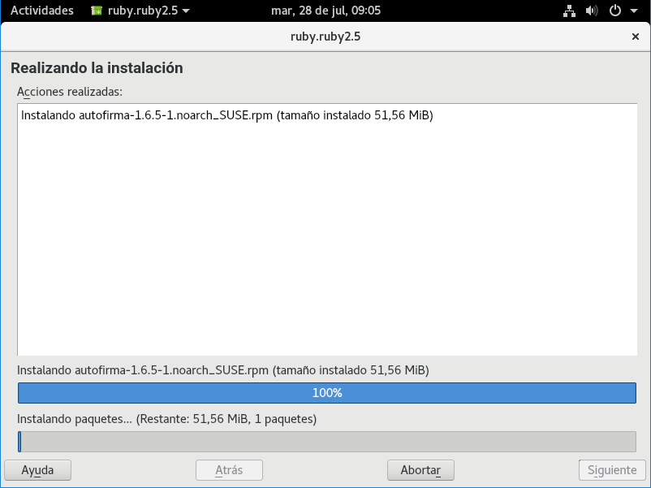
Tras finalizar el proceso de instalación, se mostrará una pantalla con el resultado del mismo:
<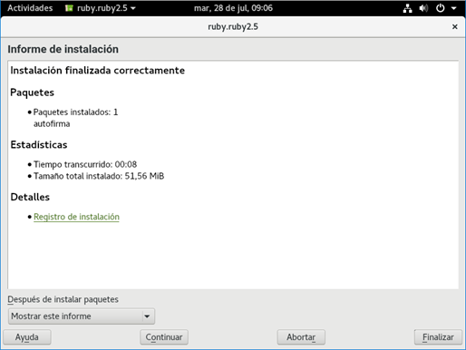
Desinstalación
Desinstalación del paquete con RPM
Para realizar la desinstalación del sistema se puede utilizar el siguiente comando.
sudo rpm –e autofirma
Cuando el proceso termine, la aplicación habrá sido correctamente desinstalada del sistema.
Desinstalación del paquete con Zypper
Para realizar la desinstalación del sistema se puede utilizar el siguiente comando.
sudo zypper rm autofirma
Cuando el proceso termine, la aplicación habrá sido correctamente desinstalada del sistema.
Actualización
Actualización del paquete con RPM
Para actualizar desde AutoFirma 1.8 a una posterior usaremos el comando:
sudo rpm -U autofirma-X.Y.Z.noarch.rpm
Sin embargo, cuando queremos actualizar desde una versión anterior a AutoFirma 1.8, deberemos indicar que durante la actualización no se ejecute el proceso de desinstalación de esa versión, ya que incluía un error que impedía el proceso. Para ello usaremos el comando:
sudo rpm -U --nopreun --nopostun autofirma-X.Y.Z.noarch.rpm
Cuando el proceso termine, la aplicación habrá sido correctamente actualizada.
Apple macOS
Instalador PKG
La instalación de AutoFirma en macOS debe realizarla un usuario con permisos de administrador. El archivo de instalación se distribuye con el nombre “AutoFirma_X.Y.Z.pkg”, donde X, Y y Z (opcional) son los números de la versión. Por ejemplo, “AutoFirma_1.6.pkg” correspondería a AutoFirma versión 1.6.
AutoFirma es compatible con las versiones de macOS Sierra y superiores. Los navegadores compatibles son Apple Safari, Google Chrome y Mozilla Firefox.
Para la instalación de la aplicación, se debe hacer doble clic sobre el fichero. El sistema abrirá el asistente que se encargará de realizar los pasos a seguir para la correcta instalación de la aplicación.
<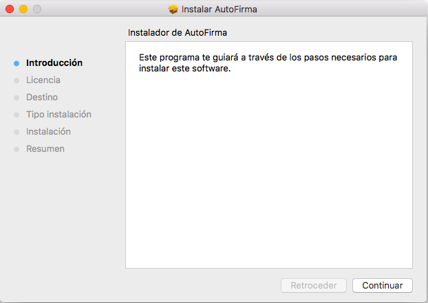
Para iniciar el proceso de instalación, hay que pulsar el botón “Continuar”, tras lo que se nos mostrará el acuerdo de licencia.
<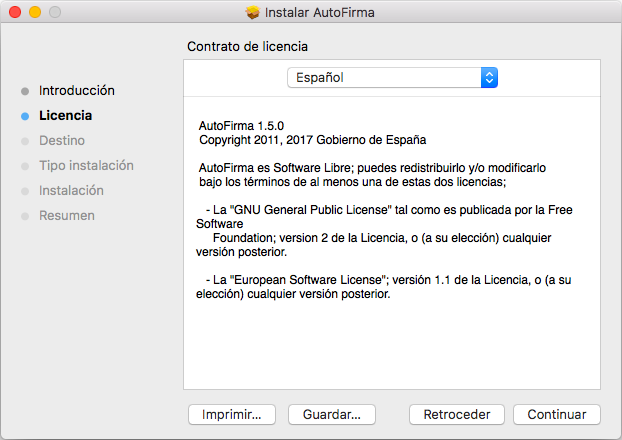
Una vez leída la licencia del producto, se puede pulsar “Continuar”. En ese momento, se indicará que se debe aceptar la licencia. Al pulsar el botón "Aceptar” se acepta la licencia y continúa con la instalación.
En la siguiente pantalla se mostrará seleccionar la unidad en la que se almacenará la aplicación:
<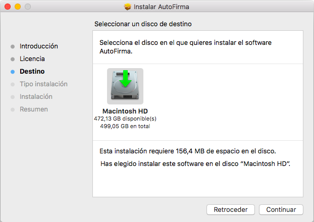
En esta pantalla se debe seleccionar la unidad principal y pulsar “Continuar” para ver el detalle resumen del proceso de instalación.
<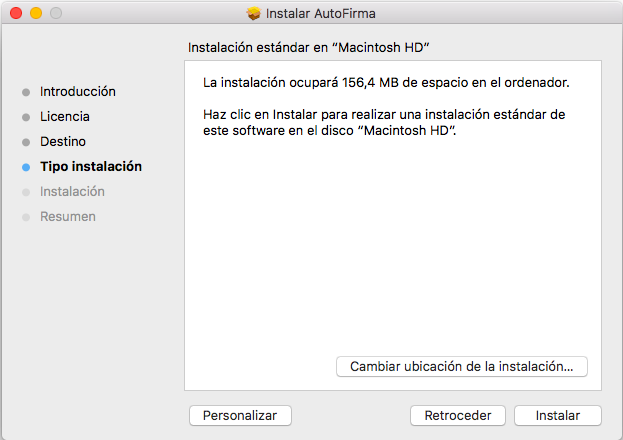
En esta pantalla se puede ver cuánto espacio en disco ocupará la aplicación. Al pulsar el botón “Instalar”, se comienza la instalación del producto.
Para completar la instalación será necesario indicar el nombre de usuario y contraseña de un usuario con permisos de administrador, ya que será necesario instalar certificados de confianza en el almacén del sistema y Firefox.
<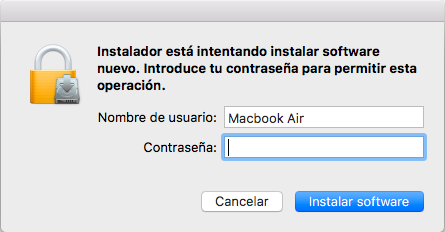
En caso de detectarse que el navegador Mozilla Firefox está en ejecución, se pedirá al usuario que lo cierre para continuar con el proceso de instalación.
Finalmente, se informará del resultado de la instalación.
<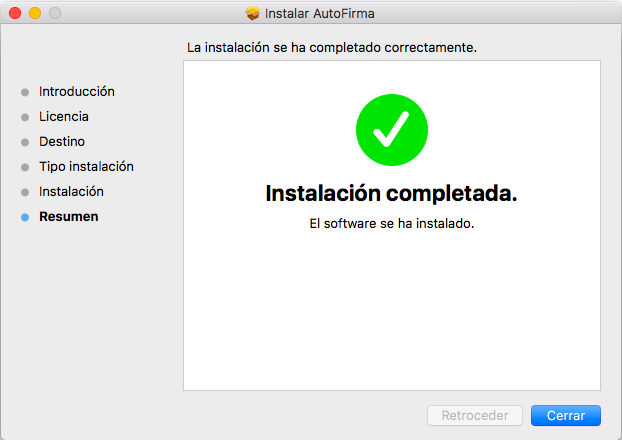
Desinstalación
Para desinstalar la aplicación basta con eliminar la carpeta que se generó en el directorio /Applications.
También es recomendable eliminar los certificados identificados como “AutoFirma ROOT” y “127.0.0.1” del llavero de macOS. Puede realizarse esto accediendo a la aplicación “Acceso a Llaveros”, seleccionándose el llavero “Sistema” y eliminando del listado los certificados mencionados.
Uso de DNIe y tarjetas inteligentes
El Cliente @firma utiliza la biblioteca JMulticard para permitir firmar con DNIe y tarjetas inteligentes de la Fábrica Nacional de Moneda y Timbre (FNMT) sin necesidad de que los usuarios tengan instalados los controladores de la tarjeta. Por defecto, siempre que se seleccione un certificado de DNIe o uno insertado en una tarjeta de la FNMT, se utilizará JMulticard para ejecutar la operación de firma. El uso de JMulticard sobre el controlador oficial de estas tarjetas conlleva ciertas ventajas, ya que existen ciertas incompatibilidades de AutoFirma con estos que impiden que funcionen correctamente, sobre todo cuando se realizan firmas de múltiples documentos.
JMulticard está activado por defecto en AutoFIrma, pero puede desactivarlo para usar el controlador oficial de la tarjeta, que deberá estar instalado en el sistema, siga las instrucciones indicadas a continuación:
-
Abra la aplicación AutoFirma.
-
Seleccione el menú “Herramientas” y la opción “Preferencias”.
-
En la pestaña “General” se muestra la opción “Habilitar JMulticard para el uso de las tarjetas de la FNMT y DNIe”.
-
Después de modificar esta opción, deberá pulsar Aceptar en el panel de preferencias.
-
La configuración será efectiva la próxima vez que se abra AutoFirma.
<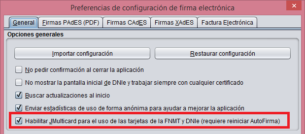
Cuando se desactiva el uso de JMulticard, no se usa esta biblioteca para firmar, ni en la firma local de documentos ni en las firmas dentro de un trámite web, en donde se utilizará el mismo controlador que utilice el navegador web utilizado. La única excepción a esto es cuando, al abrir AutoFirma, se selecciona expresamente la opción “Continuar con DNIe”.
Se recomienda mantener activado JMulticard por defecto, pero puede plantearse modificar esta configuración según el uso habitual de firma.
-
Manténgalo activado cuando habitualmente:
-
No utilice tarjetas para firmar.
-
Use tarjetas inteligentes o utilice el DNIe y tarjetas de la FNMT.
-
-
Manténgalo desactivado e instale los controladores oficiales de su tarjeta cuando habitualmente:
-
Utilice una nueva versión de DNIe o tarjeta inteligente y haya comprobado que AutoFirma no funciona correctamente con ellas.
-
Utilice tarjetas distintas a DNIe y tarjetas de la FNMT. JMulticard no impedirá su uso, pero sí puede alterar su comportamiento, por ejemplo, impidiendo que el controlador guarde en caché el PIN del usuario para reutilizarlo en firmas consecutivas.
-
Realice los trámites web desde Firefox y advierta que se producen problemas al firmar con su tarjeta (puede ocurrir con versiones antiguas de tarjetas de la FNMT).
-
La biblioteca JMulticard pedirá el PIN de las tarjetas siempre que lo requiera, lo que puede suponer insertarlo por cada documento de firma en los procesos de firma masiva. Para evitar esto, el propio diálogo de inserción de contraseña ofrece al usuario la posibilidad de seleccionar que se recuerde la contraseña durante la sesión de firma. Esta opción, sin embargo, podría no funcionar en trámites web (según la integración realizada del trámite y el navegador del usuario). En esos casos, se seguirá pidiendo la contraseña por cada documento. Este comportamiento podría corregirse con el uso del controlador de oficial de la tarjeta, aunque esto puede conllevar otros inconvenientes (necesidad de tener instalado el controlador, posibles incompatibilidades de arquitectura, posibles problemas de conexión con el dispositivo, etc.).
Uso por línea de comandos
AutoFirma permite su uso a través de línea de comandos, proporcionando funcionalidades de firma, firma de lotes y creación y verificación de hashes.
El ejecutable o script a utilizar para la ejecución de AutoFirma por línea de comandos varía en función del sistema:
-
Windows
- El proceso de instalación copia en el directorio de AutoFirma el ejecutable “AutoFirmaCommandLine”. Utilice este ejecutable desde línea de comandos para realizar las distintas operaciones que se soportan.
-
Linux
- El proceso de instalación genera en el directorio “/usr/bin” el script “autofirma”. Utilice este script para ejecutar la aplicación proporcionándole directamente los parámetros de la operación que desee.
-
macOS
- Para el uso de la aplicación por línea se facilita un script. Utilice este script para ejecutar la aplicación proporcionándole directamente los parámetros de la operación que desee. Aquellos parámetros que incluyan saltos de línea deberán proporcionarse enmarcados entre comillas simples.
Por ejemplo, se puede ejecutar AutoFirma y listar las distintas operaciones disponibles a través de la línea de comandos con el comando “-help” de la siguiente manera:
En Windows:
AutoFirmaCommandLine –help
En Linux:
/usr/bin/AutoFirma –help
En Mac:
/Applications/AutoFirma.app/Contents/MacOS/AutoFirmaCommandLine –help
Esto daría como resultado:
Herramienta de firma de documentos. Sintaxis: AutoFirma cmd [options...] Comandos cmd: sign (firma de fichero) cosign (cofirma de fichero) countersign (contrafirma de fichero) listaliases (lista los alias disponibles en el almacen) verify (abre un panel con la informacion de validacion de una firma o certificado) batchsign (firma/multifirma de lotes de ficheros) Utilice "AutoFirma cmd -help" para ver la sintaxis del comando "cmd" |
|---|
Algunos plugins, como el de las funcionalidades de cálculo de hashes, pueden agregar nuevos comandos accesibles por consola.
Para listar las opciones de configuración de alguno de los comandos, puede utilizar la opción “-help” sobre cualquiera de ellos. Por ejemplo:
AutoFirmaCommandLine sign –help
Esto daría como resultado:
Sintaxis: AutoFirma sign [opciones...] Opciones: -gui (Realiza la operacion con entorno grafico. Tiene prioridad sobre -certgui) -certgui (Usa un dialogo grafico para la seleccion del certificado de firma) -i inputfile (Ruta del fichero de entrada) -o outputfile (Ruta del fichero de salida) -algorithm algo (Algoritmo de firma) -format (Establece el formato de firma) auto (Seleccion de formato en base al fichero de entrada) cades (Formato CAdES) pades (Formato PAdES) xades (Formato XAdES) facturae (Firma de factura electronica) -config extraParams (Properties en texto plano con la configuracion de la operacion) -store (Establece el almacen de claves. Por defecto, el del sistema) auto (Almacen de claves del sistema) windows (Almacen de claves de Windows) mac (Almacen de claves de macOS) mozilla (Almacen de claves de Mozilla Firefox) dni (DNI electronico) pkcs12:p12file (Almacen PKCS#12. "p12file" es la ruta del almacen) pkcs11:p11file (Almacen PKCS#11. "p11file" es la ruta del controlador) -password password (Establece la contrasena del almacen) -alias alias (Alias del certificado de firma) -filter filter (Filtro para seleccionar el certificado de firma) -xml (Formatea la respuesta como XML) |
|---|
Habilitar en Firefox la confianza en los certificados raíz del sistema
Mozilla Firefox permite un modo de configuración en Windows y macOS con el cual, además de confiar en los certificados raíz de su almacén de confianza, puede confiar también en los certificados en el almacén de confianza del sistema. Habilitar esta configuración implica diversas ventajas para el usuario:
-
Puede instalar los certificados únicamente en el almacén del sistema. No es necesario que los instale en el almacén de confianza de Firefox
-
En entornos en los datos de la cuenta del usuario se carga desde un servidor, no es necesario transferir los datos del almacén de confianza de Firefox.
La configuración del almacén de confianza de Firefox se puede establecer durante la instalación de AutoFirma en Windows o mediante la opción de “Reparación de la instalación” de la aplicación en Windows o macOS. La opción de reparación de la instalación habilitará o deshabilitará esta opción según se haya marcado no la casilla de verificación antes de iniciar el proceso de restauración.
<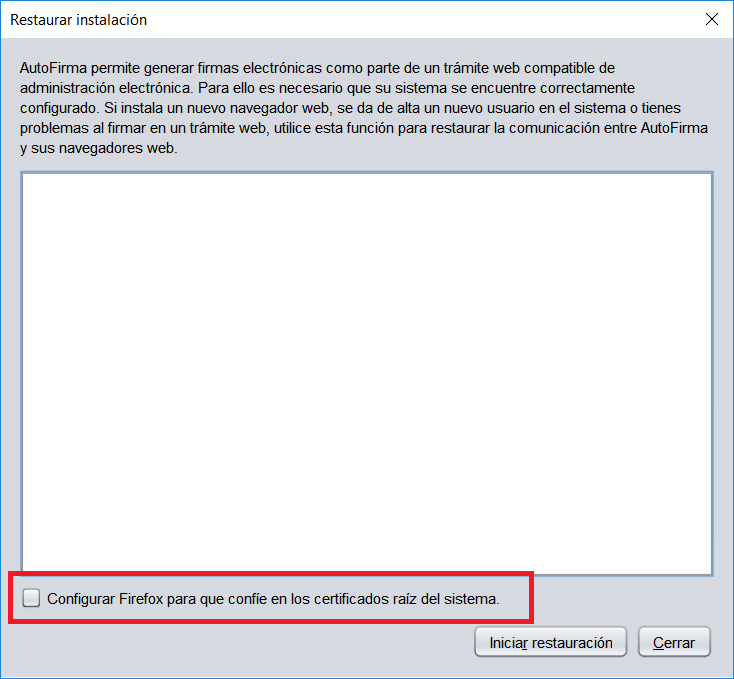
Problemas conocidos
Al instalar AutoFirma falla la instalación de los certificados de confianza SSL
AutoFirma requiere permisos de administrador para ser instalado y para insertar el certificado de confianza SSL para el funcionamiento de la firma en los trámites online. Si falla el proceso de instalación de los certificados, acceda al apartado de reparación de la instalación de AutoFirma (Menú “Herramientas” à “Restaurar la instalación”) y ejecute el proceso de reinstalación.
En el caso de que la instalación de los certificados falle únicamente en Firefox, valore la el activar la confianza de Firefox en el almacén del sistema (sólo para sistemas Windows y macOS).
Si no puede instalar AutoFirma o el certificado de confianza y no es usted el administrador del sistema, solicite al administrador de su sistema que realice la instalación de la aplicación.
Al instalar AutoFirma en Windows se muestra el error: “Error abriendo archivo para escritura”
Es posible que durante la instalación se le muestre un error como el que sigue:
<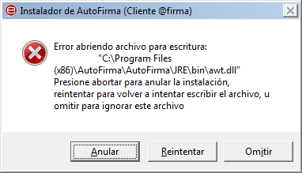
Si ya tenía instalado AutoFirma, compruebe que este no se está ejecutando, en cuyo caso el instalador no podrá sobrescribir los ficheros de instalación. Cierre AutoFirma y pulse el botón reintentar.
Si AutoFirma no se está ejecutando, es posible que el archivo en cuestión se encuentre bloqueado por una ejecución o intento de instalación previo. Reinicie su equipo y pruebe a instalar nuevamente la aplicación.
No se puede instalar AutoFirma en Windows porque indica que la versión ya está instalada o que hay una superior
Al desinstalarse AutoFirma puede ocurrir algún error que deje entradas de registro residentes en el sistema que hagan creer que AutoFirma sigue instalado en el sistema. En estos casos, es posible que AutoFirma ya no aparezca en el listado de programas instalados, pero que al intentar volver a instalar AutoFirma se informe de que una versión superior o la misma versión de la aplicación ya está instalada.
Primeramente, se debería reiniciar el equipo para asegurar que ningún recurso de la anterior instalación se encuentra en uso. Si tras el reinicio, ni aparece la versión que se instaló de AutoFirma ni se puede instalar la nueva versión a partir del instalador EXE, pruebe a utilizar el instalador MSI de AutoFirma. Este forzará la instalación de la nueva versión.
Al instalar AutoFirma en Linux a partir del paquete RPM con el gestor de paquetes del sistema se muestra el mensaje de error “Error interno”
Es posible que no se haya importado la clave PGP de firma en el almacén de confianza. Siga las instrucciones del apartado 4.2.2.1 Importación de la clave pública PGP del instalador para la importación de la clave PGP.
Al instalar AutoFirma en Linux a partir del paquete RPM desde consola aparece el error “NOKEY”
El mensaje “NOKEY” se muestra cuando se detecta que el instalador está firmado pero la clave no se ha importado en el sistema. Según el sistema, es posible que el instalador continúe con el proceso de instalación o no después de mostrar el mensaje.
Si el instalador no completa la instalación, prueba a importar la clave de firma en su sistema y repetir el proceso de instalación. Puede consultar como importar la clave PGP en el apartado 4.2.2.1 Importación de la clave pública PGP del instalador.
Al actualizar AutoFirma en Linux a partir del paquete RPM deja de funcionar
AutoFirma 1.7.1 y anteriores incluían un error en su desinstalador que impedía la correcta actualización a versiones posteriores. Para actualizar desde AutoFirma 1.7.1 o anterior a una nueva versión de AutoFirma es necesario indicar que no se debe ejecutar el desinstalador de la versión anterior durante el proceso. Por ejemplo, para actualizar mediante “rpm” deberíamos usa el comando:
sudo rpm -U --nopreun --nopostun autofirma-X.Y.Z.noarch.rpm
Si ya intentó actualizar AutoFirma y ahora no funciona, desinstálela e instale directamente la nueva versión.
Cuando se instala Mozilla Firefox o se crea un nuevo perfil de usuario después de la instalación de AutoFirma, este no funciona en Firefox
Durante el proceso de instalación de AutoFirma se genera un certificado para la comunicación entre la página web y la aplicación, y lo instala en los almacenes de confianza del sistema y de Firefox. Si se crea un perfil de usuario de Firefox o se instala el propio Firefox después de la instalación de AutoFirma, este no contará con el certificado entre los que considera de confianza.
Para resolver este problema utilice la función de restauración de la instalación de AutoFirma: Menú “Herramientas” à “Restaurar instalación”.
AutoFirma se cierra inmediatamente tras ser invocado desde el navegador web
Cuando se abre AutoFirma por petición de un navegador web inmediatamente se abre una conexión entre ambas aplicaciones. Si AutoFirma detecta cualquier problema que evita que se pueda establecer esa comunicación, se cierra. Esto dará lugar a que, pasado un tiempo, la página web que intentó realizar la operación de firma informe de que no se pudo conectar con AutoFirma.
Para resolver este problema utilice la función de restauración de la instalación de AutoFirma: Menú “Herramientas” à “Restaurar instalación”. Esta función permitirá reestablecer la configuración y los recursos necesarios para que se pueda establecer la comunicación entre el navegador y AutoFirma.
No se detectan tarjetas inteligentes en macOS
Muchas tarjetas inteligentes no disponen de los controladores necesarios para su uso a través del llavero de Apple (almacén utilizado por AutoFirma cuando se usa a través de Safari, Chrome o como aplicación de escritorio). En el caso concreto del DNIe, AutoFirma es capaz de utilizarlo por medio del controlador Java que incorpora, pero con el resto de las tarjetas no es posible.
Para utilizar tarjetas criptográficas en macOS, instale sus controladores PKCS#11 como dispositivos de seguridad en Mozilla Firefox y utilice AutoFirma a través de este navegador.
AutoFirma muestra un tamaño de letra más grande o pequeño de lo habitual en Windows
Windows puede modificar el tamaño de letra con el que se muestran algunas aplicaciones al detectar pantallas de alta densidad, como monitores 4K. En el caso de hacerlo, es probable que AutoFirma se muestre con un tamaño de letra que resulte molesto o impida su correcto usa. Para corregir esto es necesario indicarlo al sistema que restablezca el tamaño de letra.
Podemos hacer esto desde el “Panel de Control”, en el apartado “Fuentes”. En esta pantalla se podrá encontrar la opción “Configuración de fuentes” y dentro de la misma habrá un botón “Restaurar configuración de fuente predeterminada”. Tras restaurar la configuración de fuentes y arrancar AutoFirma, veremos que el tamaño de fuente ha vuelto a la normalidad.
<
Esta obra está bajo una licencia Creative Commons Reconocimiento-NoComercial-CompartirIgual 3.0 Unported.